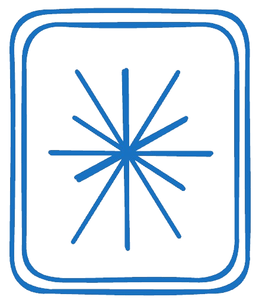

Singularity
Research + chat workspace
Ask a hard question.
Get a sourced answer.
Singularity turns one prompt into a long, cited research report — or a quick chat when you just need to think out loud. Bring your own model keys, and keep every source.
No credit card · Your keys, your usage
Compare solid-state and LFP battery cost curves through 2027, with sources.
Research
High
Claude Sonnet 4.5
Enter to send · Shift+Enter for newline
{{ m.who }}
{{ m.text }}{{ m.caret }}
Singularity
Chat mode
Or just talk it through.
Sometimes you don't need a document — you need a fast answer. Chat is quick back-and-forth on the same model picker, and any thread can graduate into a full sourced report the moment it gets serious.
Instant back-and-forth
Quick answers with no ceremony — the fastest way to think a problem through.
Promote to research
Turn any thread into a full sourced report the moment a question gets serious.
Any model, one picker
Swap between Claude, GPT-5, DeepSeek, Grok, or Groq without leaving the conversation.
Bring your own model